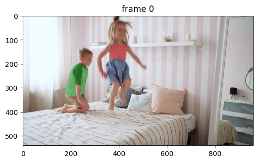

分野・タスクから知る · Video Understanding and Generation
動画理解・生成
動画では、一枚の画像の内容に加えて、時間に沿った変化を扱います。対象の追跡、画素の動き、動画の生成を、既存の研究結果と映像で見ていきます。
対象の追跡
追跡では、動いたり隠れたりする対象を、動画の中で引き続き見つけます。SAM 2はその一例で、指定した対象の領域を各フレームで推定します。元画像と、2人の服にマスクを付けた結果です。

1 / 7 · frame 0
左右の矢印で、元画像と結果が同時に切り替わります。赤と緑が追跡対象の服の領域です。動いたり一部が隠れたりしても、対象の見えている部分にマスクを付けるタスクです。
出典：SAM 2公式ノートブックの複数対象の追跡結果 ↗。保存済み出力を無加工で引用。
SAM 2は過去のフレームの情報を使って、指定した対象の領域を追います。
{kind=link}
著者実装のSA-Vデータセット紹介図。色は対象のマスク。データセットの例示であり、この図全体をモデルの予測精度の証拠とは扱わない。 画像を拡大 ↗
画素の動きの推定
オプティカルフローは、画像の各位置が次の画像でどちらへどれだけ動いたかを表します。RAFT（ECCV 2020）は、2枚の画像からその動きを推定する研究例です。下はKITTIテストセットでの入力画像と推定結果です。
{kind=link}
{kind=link}
出典：Teed & Deng, RAFT, Figure 4（PDF p.10） ↗の左下の例。前方の車と背景の動きが、異なる色で表されています。
色は画素の動きの方向と大きさを表します。同じ色でも「同じ人物」という意味ではありません。人物だけでなく背景にも色が付くのは、カメラの動きでも画面上の位置が変わるためです。
動画生成
動画を作るには、1枚の画像の見た目だけでなく、ものがどう動き、場面が時間とともにどう変わるかも学ぶ必要があります。人が歩くと姿勢が変わり、車が進むと周囲の景色も変わります。動画生成モデルは、多くの映像からこうした変化のパターンを学習します。
Soraは文章に合った映像を生成し、Genie 3はユーザーの操作に応じて、その先の映像を生成します。後者のような行動に応じた環境変化を予測する世界モデルは、候補行動の結果を考える手がかりにもなります。ただし、映像を生成できるだけで、行動の結果や物理法則を正確に予測できるとは限りません。
文章からの動画生成：Sora
Sora：Tokyo walk（2024） ↗。公式の生成映像から冒頭15秒を抜粋。
「ネオンが光る夜の東京を、黒いジャケットと赤いドレスの女性が歩く」という文章から生成。人物の歩行と、移り変わる街並みを一つの映像にしています。
操作に応じた生成：Genie 3
ユーザーの入力に合わせて、次の画面を予測し続ける。
Genie 3：Backyard racetrack ↗。公式の操作デモ映像。
今の画面と操作、それまでの履歴から次の画面を生成します。例えば、車を右に曲げる操作をすると、車の向きと周囲の景色が変わります。生成した画面をもとに次の操作へ応答することを繰り返すので、ゲームのように動かせます。
あらかじめ用意した3D物体を物理エンジンで動かす方式とは異なり、操作に応じた映像そのものを生成しています。ここに掲載しているのは、その操作結果を記録した動画です。